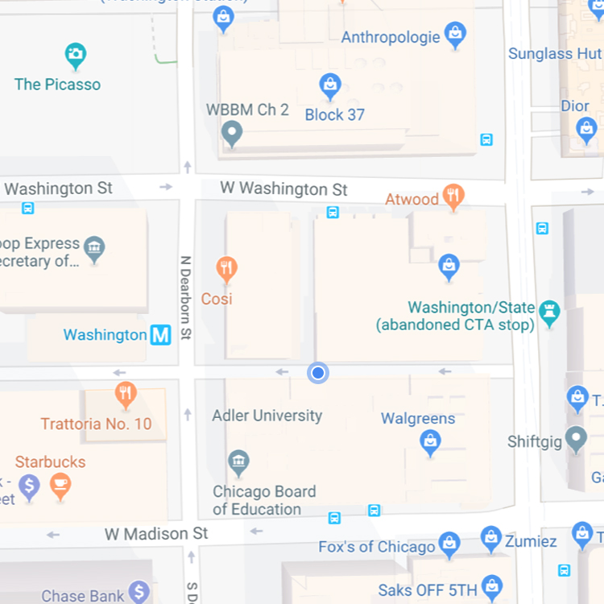

Washington & State

Eastbound
#60 to Randolph/Harbor Dr
Every 20 minutes
#124 to Navy Pier
Every 10 minutes
Northbound
#151 to Devon/Clark
Every 16 minutes
Southbound
J14 to 103rd/Stony Island
Every 15 minutes
124 to Navy Pier
Every 10 minutes
reroute
#6x to Jackson Park Express
N/A
out of service
#4 to Cottage Grove
Resumes 12:10 a.m.
#20 to Madison
Resumes 12:10 a.m.
#157 Streeterville/Taylor
Resumes 6:00 a.m.